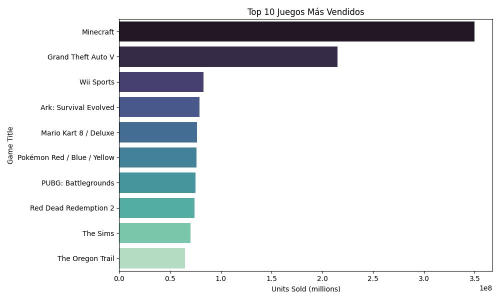
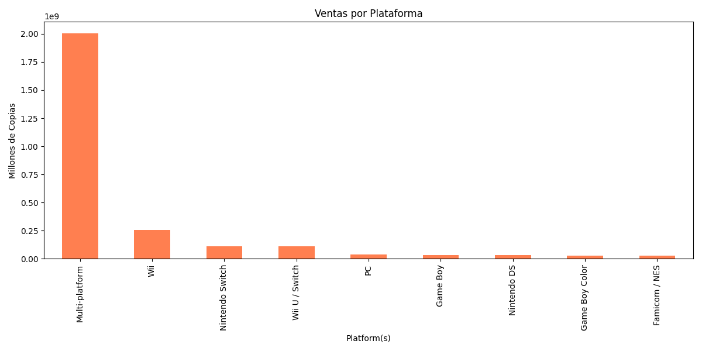
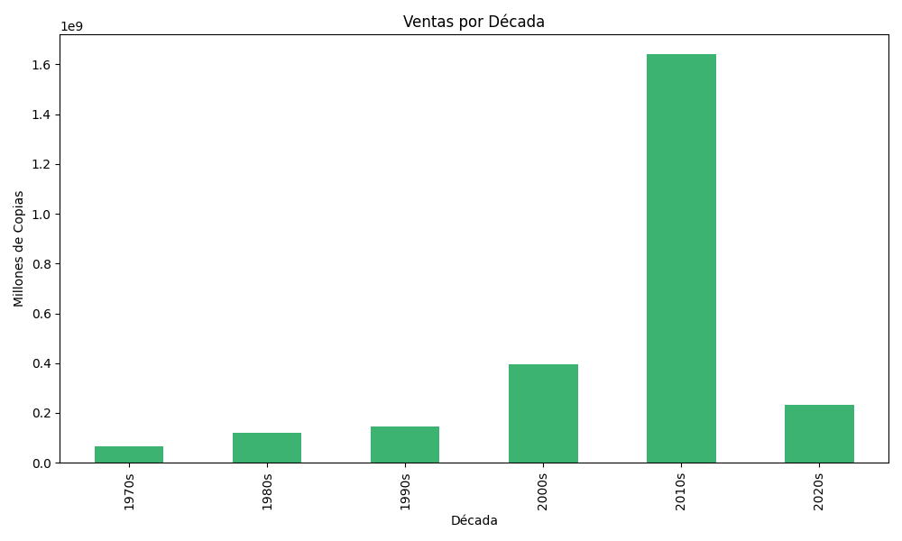
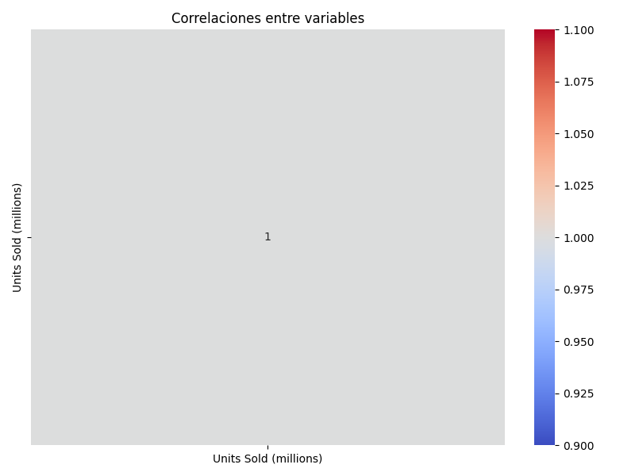

Descripción del Proyecto
Este proyecto analiza los videojuegos más vendidos de la historia utilizando técnicas de análisis de datos con Python, pandas, matplotlib y seaborn.
Se visualizan los juegos más vendidos, las plataformas más exitosas y los géneros preferidos, con el objetivo de descubrir patrones en la industria de los videojuegos.
Top 10 Juegos Más Vendidos
Ventas por Plataforma
Ventas por Género

Ventas por Década
Correlaciones
Conclusiones
Se observa que títulos como Minecraft y GTA V dominan en ventas globales. Nintendo y Sony lideran como plataformas preferidas. Los géneros de acción y aventura muestran alta popularidad. Además, se nota un crecimiento continuo en las ventas desde los años 80 hasta la actualidad, reflejando la evolución de la industria del gaming.